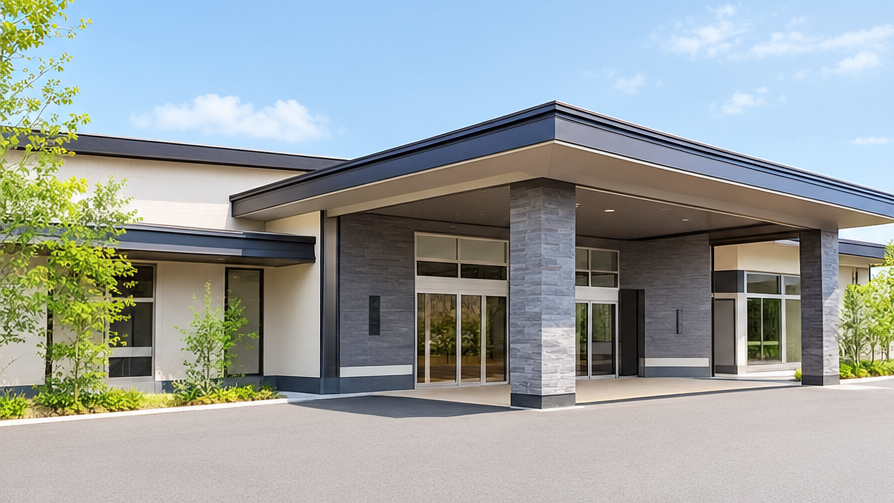
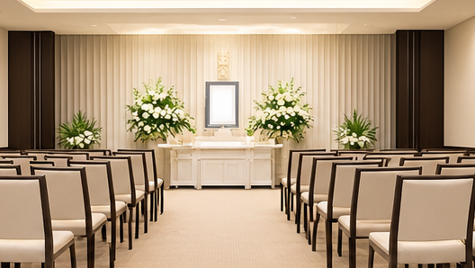
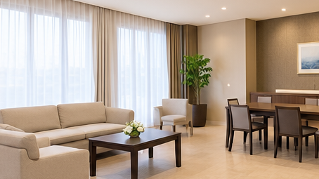
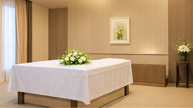
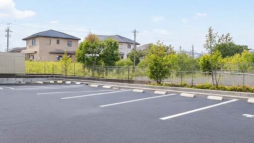

VENUE
式場案内
ご家族や大切な方々が、
ゆっくりとお別れの
時間を過ごせる空間をご用意しています。
FUNERAL HALL
やすらぎホール
大切な人との最後の時間を、
落ち着いた空間で過ごしていただける式場です。

ご家族に寄り添う
あたたかな空間
ご家族やご親族がゆっくりと故人との 時間を過ごせるよう、落ち着いた雰囲気の 空間をご用意しています。
少人数でのお別れから、ご親族やご友人を お迎えする葬儀まで、ご希望に合わせて ご利用いただけます。
FACILITIES
施設・設備
ご家族が安心してお過ごしいただけるよう、
必要な設備を整えています。

式場
ご家族の人数や葬儀の形式に合わせて
ご利用いただける落ち着いた式場です。

控室
葬儀の前後にご家族がゆっくりと
お過ごしいただける空間です。

ご安置室
大切な方を安心してお預かりできる
ご安置のための空間をご用意しています。

駐車場
お車でお越しのご家族やご参列者にも
ご利用いただける駐車スペースを設けています。
ACCESS
アクセス
やすらぎホール
〒730-0000
広島県広島市中区橋本町
お車でお越しの方：
駐車場をご利用いただけます。
公共交通機関をご利用の方：
最寄り駅・バス停から徒歩○分